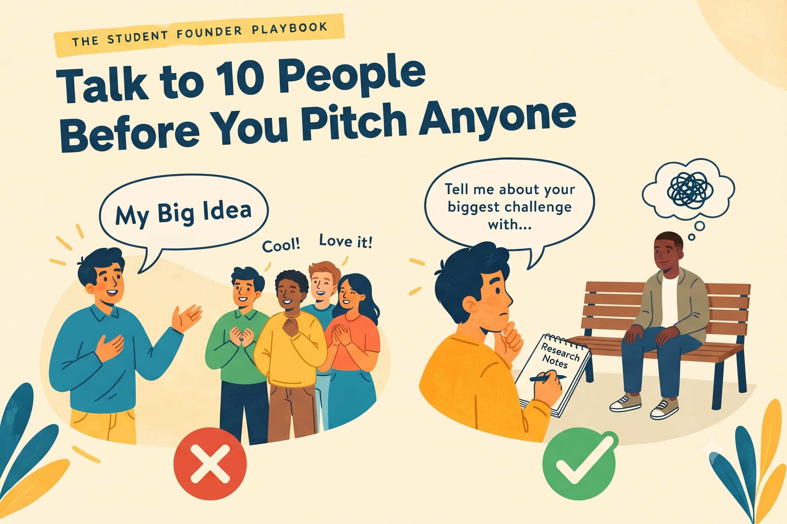

Talk to 10 People Before You Pitch Anyone

EIC MBM
Published on September 26, 2026

Pitching early feels productive, but it mostly produces polite encouragement. Early conversations are research, not sales.
Why Pitching Early Misleads You
When you pitch an idea, most people try to be kind. They say that sounds cool or let me know when it is ready. These words feel good, but they do not tell you whether anyone has the problem, or whether they would pay to solve it. A person who likes an idea is not the same as a person who lives with the problem and will spend money to fix it.
There is a second risk. Once you start pitching, you begin defending your idea. You explain why people should want it, instead of listening to why they might not. That habit makes it harder to change direction, and changing direction is often exactly what early research reveals you need to do.
Ask About the Past, Not the Future
People are poor predictors of their own behaviour, so a question like would you use this app? rarely produces reliable answers. Most people will say yes to be agreeable, and the answer tells you very little about what they will actually do. Ask instead about the last time the problem appeared. What happened, step by step? What did it cost in time, money, or stress? What did they try, and what happened when they tried it? What would change in their life if the problem disappeared tomorrow?
Stories reveal far more than opinions. If someone cannot remember the last time the problem came up, that is valuable information. The problem may matter much less to them than you assumed, and you should learn that before investing months of effort.
Find Ten People with Range
Begin with your own network: classmates, hostel mates, seniors, and members of your clubs. Then deliberately widen the circle. Close friends tend to think like you, so their views can confirm your assumptions without challenging them. Students from other branches, part-time workers, or people outside campus will expose gaps you would never have noticed on your own.
The request itself should be simple and honest. A message such as I am trying to understand a problem students face, can I ask you five questions? works far better than a long explanation of your idea. Keep the conversation to about fifteen minutes and make clear that you are not selling anything. People are generous with their time when they feel they are being listened to rather than marketed to.
What a Pattern Looks Like
A first-year student once assumed that his classmates wanted a notes-sharing app. Before building anything, he spoke to ten of them. Most already shared notes on WhatsApp, so the problem was not sharing at all. The real complaint was trust. Nobody knew which notes were accurate or up to date, and students wasted hours checking them before exams.
His product shifted from a place to share notes to a way to verify which notes could be trusted. That is a different business, and he discovered it only by listening carefully to what people actually did and said. Had he pitched his original idea, he would have collected compliments and built the wrong thing.
Recording and Synthesising What You Hear
After each conversation, write three things down immediately: the problem described in the person's own words, any workaround they use, and anything that surprised you. Their exact phrasing matters, because it often reveals the language your eventual customers will use. Your own summaries tend to drift toward the conclusions you already hoped to reach.
After ten conversations, look for convergence. When three or more people describe the same frustration in similar terms, you have a signal worth pursuing. When every person describes something different, the problem is probably too broad, and you need to narrow it before going further.
Mistakes to Avoid
Do not turn the interview into a pitch by mentioning your solution early. Do not lead people toward the answer you want, and do not treat a single enthusiastic reply as proof. Also avoid interviewing only people who are likely to agree with you. The most valuable conversations are often the uncomfortable ones, where someone tells you that the problem is not a problem for them at all.
Key Takeaway
Interviews produce evidence only when you record what people did, not what they predicted they would do.
Reflect
What is the most surprising thing someone has told you about a problem you are studying?